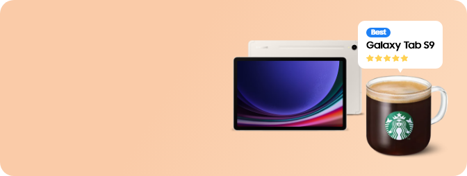

<section class="sec_review">
  <div class="inner_1440 pt_review">
      <div class="pt_review__img img_box">
        
        
      </div>
      
      <div class="pt_review__cont">
        <div class="pt_review__txt">
          <p class="pt_review__tit">베스트 리뷰어 챌린지</p>
          <p class="pt_review__desc">상품평 쓰고 <br class="m_show" />스타벅스 아메리카노 받기!</p>
        </div>    
        <a href="https://www.samsungebiz.com/event/galaxycampus/best-reviewer-challenge/" class="btn_common type_arrow pt_review__btn" data-omni-type="microsite" data-omni="event:galaxycampus:gcsPromotion:galaxy-tabs9-series:goto_review" 
        target="_blank" title="챌린지 참여하기 페이지 이동(새 창 열기)">챌린지 참여하기</a>
      </div>
  </div>
</section>
<!-- // sec_review -->